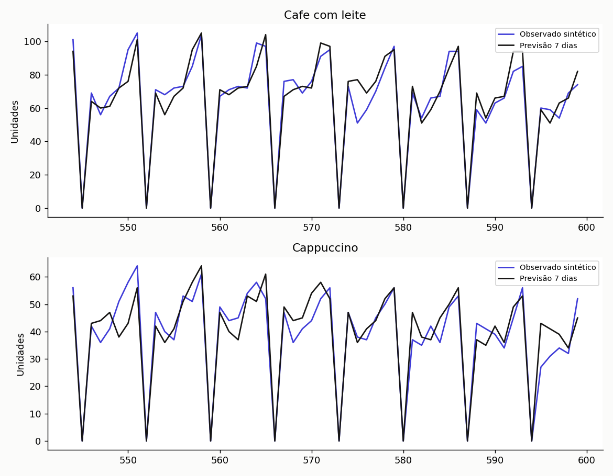
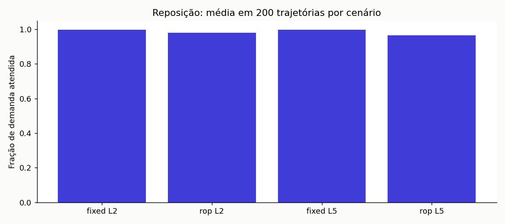

data with natan
ESTUDO INDEPENDENTE · DADOS SINTÉTICOS
Quando repor o estoque do café?
Você compara três previsões e simula reposição com prazo de fornecedor, validade e falta perdida.
Simulação didática, sem clientes reais. Os resultados não demonstram ganho comercial, satisfação ou risco real. Leia as hipóteses e os testes no documento explicativo.
Dias observados600Itens vendidos2Trajetórias por cenário200Validade do leite7 dias 
Últimos 56 dias em previsões de sete dias
Serviço simulado não é garantia realTeste final intocado na seleção
Previsão seguinte (não avaliada)
Como reproduzir / Reproduce
Na raiz: python -m src.pipeline. Para testes: python -m unittest discover -s tests -v. Os dados são gerados localmente com seed fixa; não há acesso a rede.
Independent study with synthetic data. Run the same commands to regenerate outputs. No real restaurant, customer or operational gain is represented.